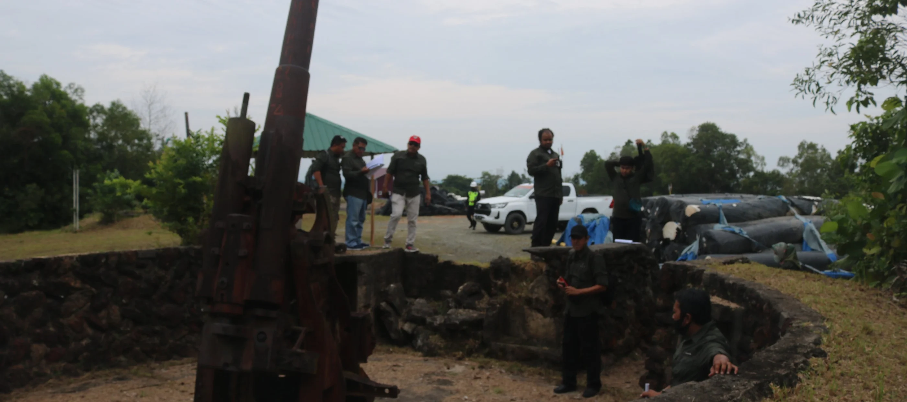

Meriam Jepang Tanjung Batu 2
Benda bersejarah ini dilindungi oleh undang-undang sebagai benda cagar budaya, namun terdapat tantangan dalam perawatan dan publikasinya sehingga sering kurang dikenal luas.
Situs ini merupakan peninggalan masa pendudukan Jepang pada era Perang Dunia II yang memiliki nilai penting dalam sejarah perjuangan dan sistem pertahanan militer di wilayah Balikpapan. Keberadaan meriam tersebut menjadi bukti strategisnya kawasan Balikpapan pada masa lalu, khususnya dalam pengamanan jalur laut dan perlindungan objek vital seperti kilang minyak.
Meriam Jepang di wilayah kerja PT. Pertamina Trans Kontinental, Tanjung Batu, Kelurahan Kariangau, Kecamatan Balikpapan Barat, merupakan salah satu Cagar Budaya yang ada di Kota Balikpapan, Kalimantan Timur.

Lokasi
Meriam Jepang di wilayah kerja PT. Pertamina Trans Kontinental, Tanjung Batu, Kelurahan Kariangau, Kecamatan Balikpapan Barat, Kota Balikpapan, Kalimantan Timur. Arah MT. Haryono (Pasar Buton).

Latar Belakang Sejarah
- Meriam ini adalah peninggalan Angkatan Laut Jepang (Kaigun) dari masa Perang Dunia II, ketika Jepang menduduki wilayah Balikpapan yang dianggap strategis karena sumber minyaknya.
- Meriam tersebut ditempatkan di bukit yang menghadap Teluk Balikpapan untuk pertahanan terhadap pasukan Belanda dan Sekutu yang mencoba merebut wilayah ini.
- Meriam ini juga banyak menimbulkan korban di kalangan pasukan Sekutu (termasuk Australia) saat operasi pendaratan.
Data Inventaris
- No. Induk 40/M
- No Inventaris 40/M/BPN/2010
- Ukuran 4x2x3 M
- Kondisi Sangat Terawat
Pendidikan dan Pariwisata
Sebagai Cagar Budaya, meriam ini tidak hanya memiliki nilai historis yang tinggi sebagai bukti peninggalan masa pendudukan Jepang, tetapi juga memiliki potensi besar untuk dikembangkan sebagai sarana edukasi dan penelitian di bidang sejarah dan kebudayaan. Selain itu, keberadaan situs ini dapat dimanfaatkan sebagai objek wisata sejarah yang bernilai edukatif, sehingga mampu memberikan kontribusi dalam pelestarian budaya daerah, peningkatan wawasan masyarakat, serta penguatan identitas lokal Kota Balikpapan.